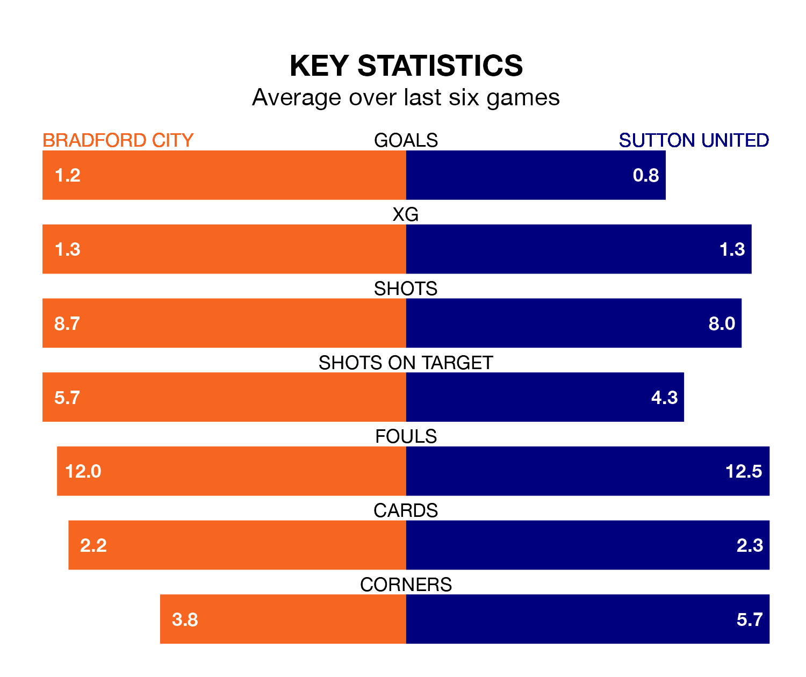

Bradford City are heavy favourites to keep all three points at home in Saturday's kick-off against Sutton United.
The Bantams, who sit 13th in EFL League Two with 32 games played, are priced at 1.5 to seal victory at the University of Bradford Stadium.
Sitting 11 places and 21 points behind them in the table, Sutton are 4.9 to win with *Betting Company*, while the draw is at 3.8.
Bradford are in mixed form in EFL League Two, with two wins and three draws from their last six games.
With no wins and three draws over that period, Sutton's form is much worse – they have taken three points from 18, compared to City's nine.
In the last five years, Bradford and Sutton have played each other on five occasions. Bradford won three of them, Sutton one, and they drew once.
On average, the Bantams scored 2.4 goals and the Us 1.2 in those matches.
Their last meeting was on October 28, when Sutton won 2-1 at home.
With 35 goals in 32 games so far this season, United are the league's third-lowest scorers with 1.1 goals per game. And they are conceding more than average, letting in 62 goals at a rate of 1.9 per game.
The Bantams are also below average scorers, with 1.2 goals per game, compared to a league average of 1.5. They have also conceded 1.2 goals per game.
In Andy Cook, the hosts have one of the league's sharpest shooters so far this season. He has notched 13 goals in 29 appearances, to sit ninth in the scoring charts.
His goal rate of one every 188 minutes is quicker than that of Harry Smith, the Us' top scorer with a goal every 246 minutes, and a total of seven goals in 23 games.
Bradford's last match was on Tuesday, a 4-0 win against Milton Keynes Dons, with Calum Kavanagh, Clark Odour, Cook and Matthew Platt getting the goals for the Bantams.
Sutton lost 2-1 against Wrexham last time out, also on Tuesday, with Charlie Lakin on the scoresheet.
Updated: 12:06 (UTC), 15/02/24